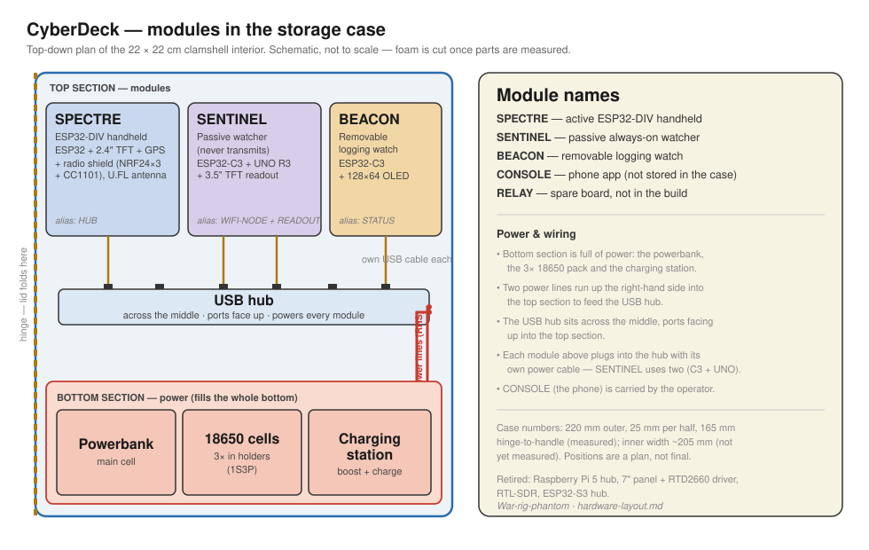
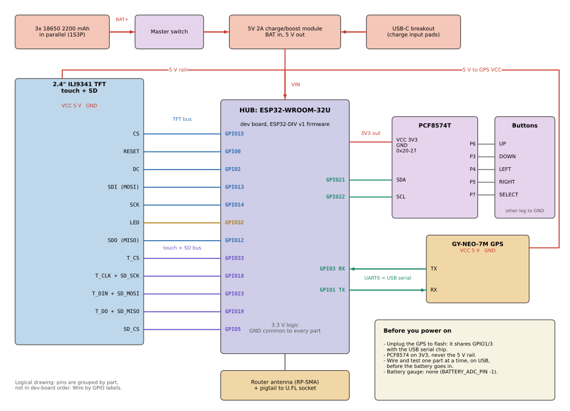

A portable, passive counter-surveillance deck in a 22 × 22 cm clamshell case. It listens to WiFi, BLE and 433 MHz (through an RTL-SDR), tags sightings with GPS, and flags devices that keep following you. A Raspberry Pi 5 4GB in the base is the hub, and a 7" panel fills the lid. Printed filler blocks hold every part.
The Pi runs everything below. Each stage works on its own, so the deck is useful from stage 1. All of it is receive-only. None of it is written yet; the firmware in v2/ targets the old ESP32-S3 hub.
| Stage | What it does | Built on | Needs |
|---|---|---|---|
| 1 | One sightings database: node reports over UART, GPS time and position on every row, WiGLE CSV export | Kismet, plus a small adapter so it reads the ESP nodes | Current parts |
| 2 | "Is this following me?" scoring: flags devices seen at several places or times on one trip, with LED and piezo alerts | Chasing Your Tail, adapted to this database | Current parts |
| 3 | Threat alerts: AirTag, SmartTag and Tile trackers; rogue and evil-twin APs; deauth floods; drone Remote ID | Kismet alerts plus BLE-SCAN and WIFI-NODE data. The Pi's own Bluetooth adds a second BLE receiver | Current parts |
| 4 | Screens: offline map of the track and sightings on the 7" panel, and the same dashboard on a phone through the Pi's own WiFi access point | Pre-downloaded OpenStreetMap tiles, Chromium in kiosk mode | Current parts |
| 5 | Watch sync: when the STATUS watch is docked, its GPS and WiFi CSV merges into the database, so walks done with only the watch count too | USB serial from the watch | Current parts |
| 6 | 433 MHz: decodes key fobs, sensors and car tyre-pressure sensors. Tyre sensors send fixed IDs, so the same car turning up again gets flagged | rtl_433 | RTL-SDR |
Rough memory use, estimated and not measured: Kismet and the scoring about 300 to 500 MB, Chromium about 0.5 to 1 GB, rtl_433 about 50 MB. That is why the hub is a 4 GB Pi 5; a 2 GB board would be tight with the map open.
Every board has one fixed name. It is used in the docs and firmware, and should be on a label stuck to the board.
| Name | Board | Job | Where |
|---|---|---|---|
| HUB | Raspberry Pi 5 4GB + Active Cooler | Runs the hub software: collects node and SDR reports, logs to microSD, drives the screen and alerts | Base, left, hanging under the deck |
| DISPLAY | 7" SAT070AT50 panel + RTD2660 driver board | Main screen, fed by HDMI from the HUB | Lid; driver board behind the panel, left |
| BLE-SCAN | ESP32-1732S019 (ESP32 + built-in 1.9" screen) | BLE tracker detection on its own screen | Lid, above the panel, middle |
| WIFI-NODE | ESP32-C3 (first) + 2.4 GHz antenna | Headless WiFi promiscuous scanner | Lid, behind the panel, right |
| STATUS | ESP32-C3 (second) + 128×64 OLED | Status and counters. Standalone | Lid, above the panel, left |
Retired from this build: the UNO + 3.5" READOUT, the ESP32-S3 and the microSD shield. The panel replaces the READOUT, and the Pi replaces the S3 and its SD card.
Lid and base seen from inside the open case. The drawing comes from the same script as the print files, so the two match. Sizes are nominal until each part is measured.

| Block | Lid | Base |
|---|---|---|
| hinge_left | Left half of the panel recess; RTD2660 driver board behind it | Pi 5, hung on four M2.5 standoffs with the cooler under the vent holes; BMS beside it |
| hinge_right | Right half of the panel recess; lid buck, boost, WIFI-NODE, RTL-SDR; two antenna channels to the side wall | 18650 holder; fuse holder flat in a top groove; DC charge socket |
| front_left | STATUS and BLE-SCAN, fitted from behind; piezo | 5 A buck; XL4015 charger in the flank by the handle |
| front_right | GPS, patch facing the lid shell; LEDs and mute button; recess for the base toggles | Sunken panel with 6 section toggles and the master; battery meter |
Each half is 25 mm deep. Toggles sit on a panel sunk 5 mm into the base and rise into a 7 mm recess in the lid. Check the toggle height against those numbers before printing.
Eight printed blocks, four per half, slide together on vertical dovetails. An M3 screw at the centre boss clamps them down. Files are in cad/case_filler/stl.
The USB-A and Ethernet end faces a wall with about 12 mm clear, so use right-angle plugs there. The only USB device is the RTL-SDR, on a right-angle cable across the hinge. Everything else connects through the GPIO header and micro-HDMI.
The panel's metal back blocks radio, so WIFI-NODE and the RTL-SDR feed pigtails along two channels to holes drilled in the right wall. Fit them so they clear the open lid. Keep the SDR away from the 12 V boost, because its switching noise can swamp weak 433 MHz signals.
Tick parts off as you collect them; ticks are saved in this browser. Prices and stock were read from the shop pages on 2026-10-31 and exclude shipping. Each link is the cheapest suitable listing that could be checked; DIYElectronics, Communica and Micro Robotics could not be read, so compare them yourself, especially over Black Friday.
| Part | Qty | Price | Role |
|---|
One 2S2P pack feeds three converters: a 5 A buck for the Pi, a smaller buck for the nodes, and a 12 V boost for the display. Estimated load is about 16.5 W (Pi 6 W, display 6 W, nodes 3 W, RTL-SDR 1.5 W). The pack holds about 32 Wh, so expect a little under 2 hours. Measure it; the cells are probably below their label.
12 V adapter -> DC socket -> XL4015 CC/CV (8.4 V, ~1 A) -+
v
18650 2S2P pack <-> 2S 20 A BMS -> fuse 8 A -> master switch --+-> 5 A buck (5.1 V) -> sw 1 -> Pi 5 pins 2, 4
| +-> XL4005 (5.1 V) -> sw 3, 4, 5 -> nodes
+-> capacity indicator (2S) +-> sw 2 -> boost (12 V) -> RTD2660 + panel
| Switch | Powers |
|---|---|
| Master | Everything, after the fuse |
| 1 | HUB: Pi 5, plus the GPS from its 3.3 V pin and the RTL-SDR from its USB. Wire both poles in parallel |
| 2 | DISPLAY: boost, driver board, panel |
| 3 | BLE-SCAN |
| 4 | STATUS: C3 + OLED |
| 5 | WIFI-NODE |
| 6 | Aux (spare) |
Feeding 5 V through the GPIO pins skips USB-C power negotiation, so add usb_max_current_enable=1 to config.txt. Solder a shutdown button to the J2 pads, and shut down before turning off switch 1; cutting power can corrupt the SD card.
The 5 A buck needs its input at least 1.5 V above its output, so the 5 V rail starts to sag near 6.6 V, before the BMS cuts out. Stop when the battery meter is on its last bar.
Measure the 12 V draw on the bench. Listings size the supply at up to 4 A, and the MT3608 is rated for 1 A continuous. If the draw is above about 0.8 A, use a larger boost.
All links are wired 3.3 V logic and the radios only receive. These are planned connections: nothing here has been wired or tested on a Pi 5 yet.

| Pin | GPIO | Goes to |
|---|---|---|
| 2, 4 | 5 V | Switch 1, from the 5 A buck |
| 6 | GND | Common ground |
| 1 | 3.3 V | GPS VCC |
| 7 | GPIO4, uart2 TX | WIFI-NODE GPIO6 RX |
| 29 | GPIO5, uart2 RX | WIFI-NODE GPIO7 TX |
| 32 | GPIO12, uart4 TX | BLE-SCAN GPIO16 RX |
| 33 | GPIO13, uart4 RX | BLE-SCAN GPIO17 TX |
| 10 | GPIO15, uart0 RX | GPS TX |
| 12 | GPIO18 | Piezo driver |
| 16 | GPIO23 | Alert LED + resistor |
| 15 | GPIO22 | Mute button to GND |
That is a thick bundle. Dry-fit it in the 24 × 10 mm hinge notch with the lid opening and closing, and leave a slack loop.
None of this is needed for the build above.
Spotting fake cell towers (IMSI catchers) needs dedicated hardware. It is out of scope for this build.